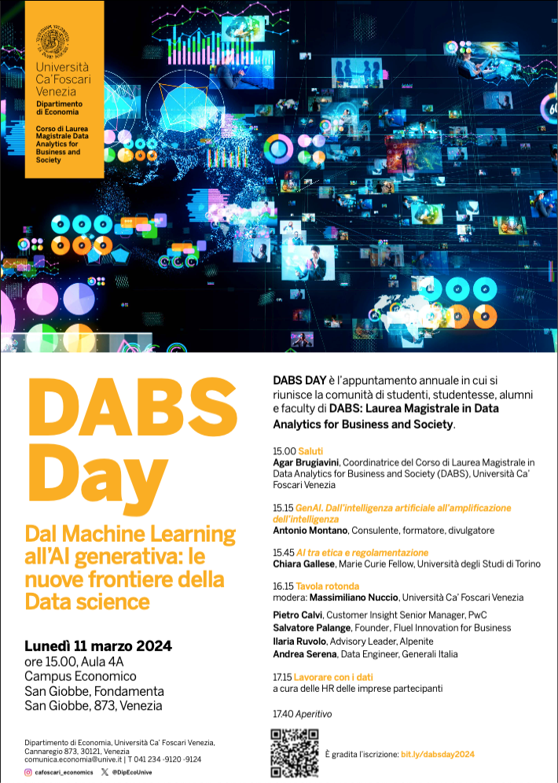
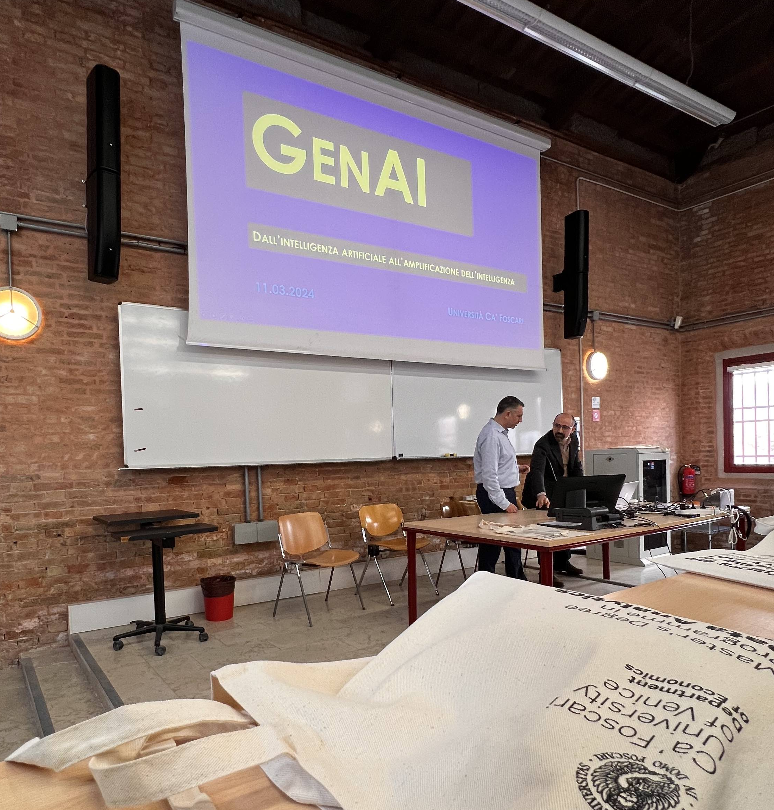
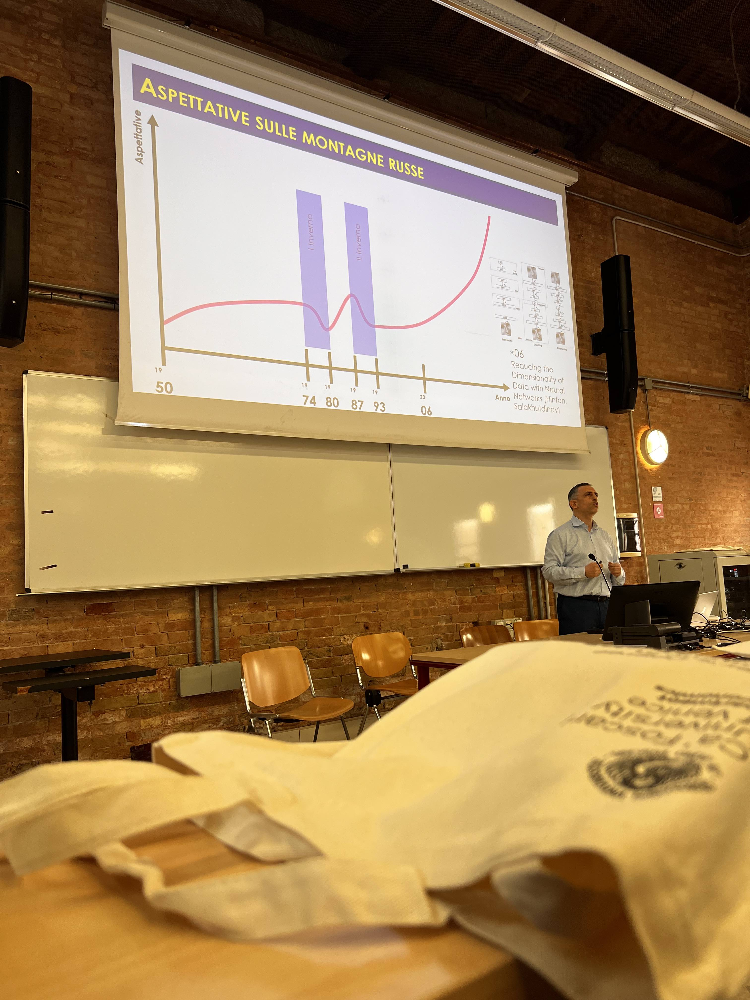

A Glimpse of Agent Evolution
Intelligence, incentives, and the rise of machine coordination
Bel pomeriggio presso l’Università Ca’ Foscari di Venezia, ospite del Dipartimento di Economia e dell’evento DABS Day 2024.
Coll’intervento di apertura dell’evento, ho portato una serie di spunti sulla intelligenza artificiale generativa, utili al confronto con i ragazzi, gli altri ospiti e il corpo docente.
Il talk è stato organizzato in 4 sezioni:
Il contesto: Aspettative tra alti e bassi. Un breve excursus storico per arrivare alla rivouluzione del deep learning e dei transformer.
Le promesse: sarà un estate perenne? La principale promessa della fase storica corrente e cioè la polivalenza dei nuovi modelli di reti neurali generative.
Le sfide: grandi guadagni, grandi rischi. La rivoluzione della IA generativa porta con sé molte sfide, tutte proporzionali alle promesse e alle aspettative suscitate.
Il futuro: IA importante come fuoco per l’umanità. Difficile trovare una metafora per definire l’impatto della IA generativa sull’umanità, ma il fuoco sembra essere la migliore per il CEO di Alphabet (vedi anche mio altro post sul tema). Quindi, rivolgo uno sguardo alle rivoluzioni tecnologiche precedenti e riporto alcune raccomandazioni per il presente e il futuro prossimo.
Si possono scaricare le slide in formato PPTX (Powerpoint). Presentano delle animazioni, quindi devono essere fruite nella modalità di esecuzione di Powerpoint.
Contattami per:
Stato e trend della GenAI.
Applicazioni aziendali della GenAI.
Selezione di strumenti e creazione di team per l’introduzione e sfruttamento della GenAI.


